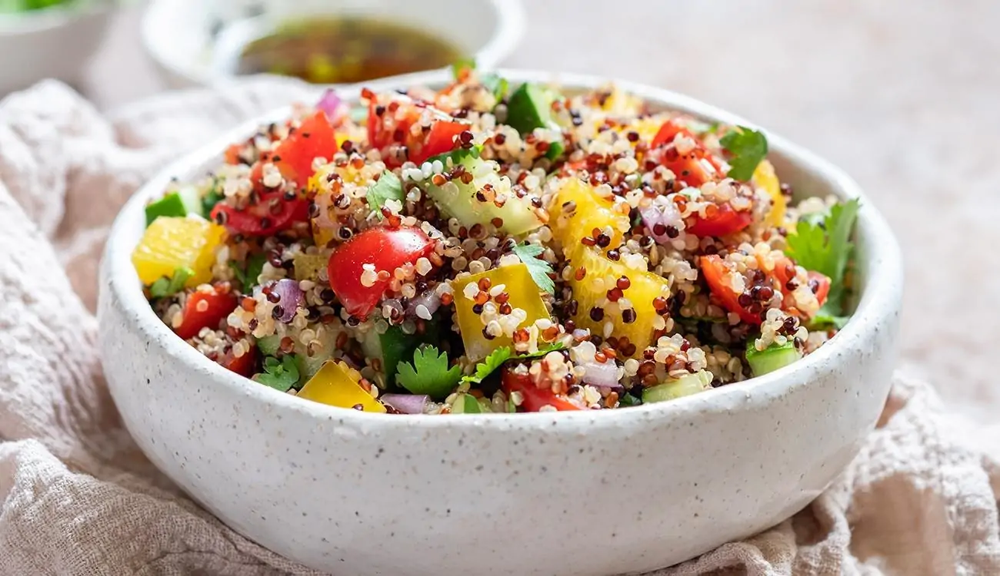

Salada de Quinoa

Ingredientes:
- 1 xícara de quinoa
- 2 xícaras de água
- 1 tomate picado
- 1 pepino em cubos
- 1 cenoura ralada
- Suco de 1 limão
- 2 colheres de sopa de azeite de oliva
- Sal e pimenta a gosto
- Salsinha ou hortelã picada (opcional)
Modo de Preparo:
- Lave bem a quinoa e cozinhe com a água até ficar macia (cerca de 15 minutos).
- Escorra, deixe esfriar e transfira para uma tigela.
- Adicione o tomate, pepino, cenoura e misture bem.
- Tempere com limão, azeite, sal e pimenta.
- Finalize com salsinha ou hortelã e leve à geladeira por 20 minutos antes de servir.
Dica do Chef:
Adicione grão-de-bico cozido ou cubos de tofu grelhado para transformar em uma refeição completa.
Comentários:
Fernanda: Muito leve e saborosa! Ótima para dias quentes.
Rafael: Adicionei abacate e ficou ainda melhor. Receita aprovada!